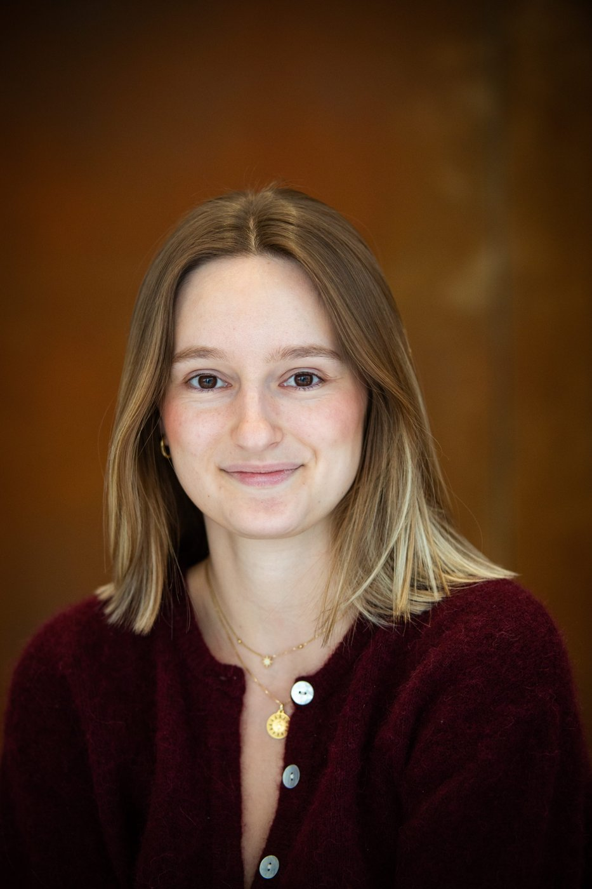
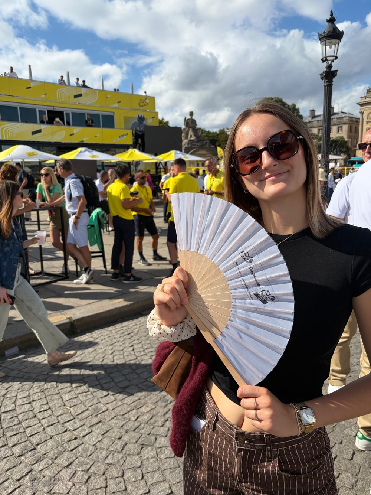

Ce que j’aime par-dessus tout, c’est faire en sorte que chacun prenne du plaisir dans son quotidien.
Que ce soit en interne, pour tous les collaborateurs d’une entreprise, ou pour les clients dans leur expérience en magasin. Ma communication, je souhaite la mettre au service des autres !
Ce que je recherche, c’est pouvoir créer du lien, des expériences personnalisées, des événements fédérateurs et des communications qui incarnent de réelles valeurs.
Depuis toujours, je suis passionnée par l’univers de la mode et du sport. C’est précisément dans ces domaines que je souhaite évoluer.
Mon parcours
Mes formations et mes expériences, dans l’ordre chronologique. Clique sur une expérience pour découvrir ses missions et ses résultats.
En dehors de mes stages, je reste une personne active et dynamique. J’ai notamment travaillé plusieurs saisons en grande distribution et en restauration.
Ces expériences ne m’ont pas permis de développer des compétences en communication, mais elles m’ont appris à développer mon sens du relationnel, le travail en équipe, l’écoute des clients et la gestion des moments de rush.
Elles montrent aussi de moi : l’adaptabilité, la polyvalence, la motivation, la rigueur et l’autonomie.
Mes compétences et mes outils
Ce que mes expériences m’ont appris. Fais défiler pour les découvrir.
Ma mobilité
Je suis mobile et prête à m’installer dans plusieurs villes de France.

Et si votre prochain talent, c’était moi ?
Diplômée d’un master en Marketing et Communication, je suis à la recherche d’un CDI ou CDD en communication interne, social media ou expérience client.
Je serais ravie d’échanger avec vous !
 coline.buisson.lnd@gmail.com
coline.buisson.lnd@gmail.com 06 11 38 05 89
06 11 38 05 89 LinkedIn
LinkedIn Télécharger mon CV
Télécharger mon CV